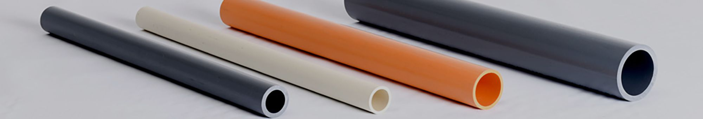
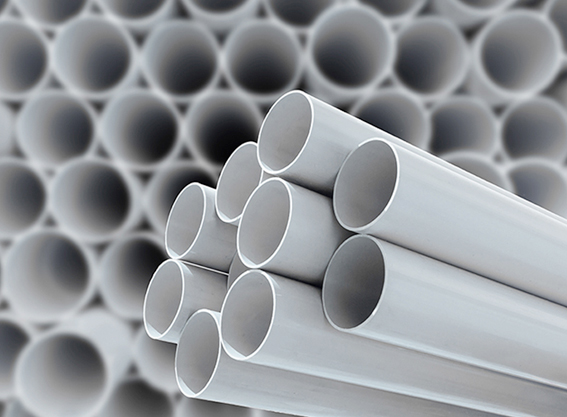
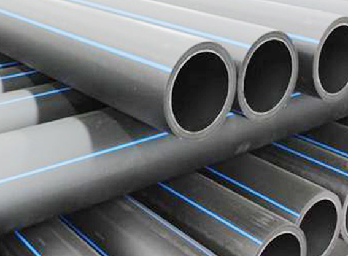
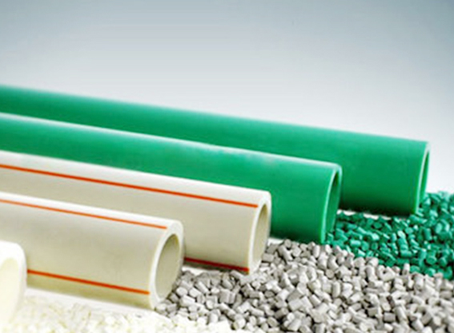
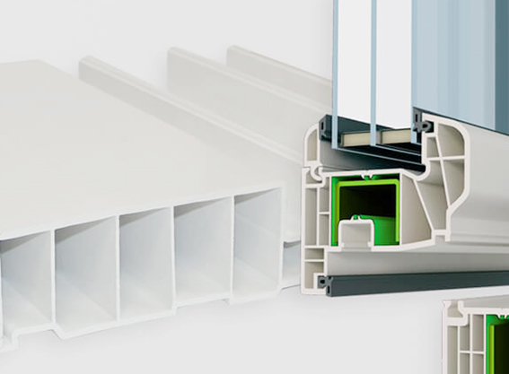

Extrusion
applications
Find extrusion equipment for the pipe, profile or board you manufacture.
Huade designs complete lines for plastics processing and updates its quality management practices to meet applicable quality and environmental requirements.


PVC pipe
Rigid PVC resists corrosion in water supply and sewer systems. It also serves as conduit to protect underground electrical cables.
PVC and UPVC pipe linesWatch PVC pipe video
Open on YouTube
PE pipe
Polyethylene lines produce pipe for water supply, gas distribution and irrigation. Huade pairs its extruders with GF series auxiliary equipment for downstream processing.
HDPE and PE pipe linesWatch PE pipe video
Open on YouTube
PPR pipe
PP-R pipe carries hot and cold water in buildings. The line can also be configured to process PE-RT, PB or PE-X resin.
PPR, PPH and IPS pipe linesWatch PPR pipe video
Open on YouTube
PVC profiles and boards
Building applications include window frames, co-extruded profiles, sills, doors and roller shutters. Other sections include wall, ceiling and sandwich panels, siding, skirting, curtain rails, cable ducts and rain gutters.
PVC profile lines